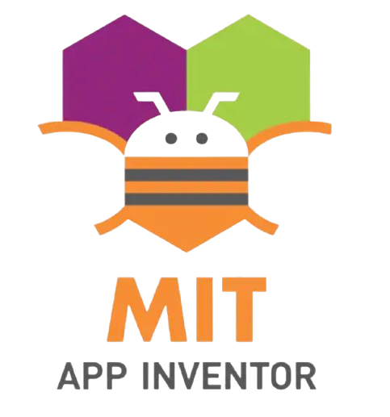

Comenzamos a programar
Comienza la aventura de programar su guión y su storyboard en App Inventor.
Previamente, hemos formado al alumnado en los conceptos básicos de programación mediante tres mini proyectos: una app de chistes, una app con IA que identifica patrones en fotos para clasificarlas, y una app de preguntas tipo concurso.
Cada mini proyecto se dividió en dos fases: en la primera, explicaba cómo hacer las cosas; en la segunda, los estudiantes debían investigar y averiguar por sí mismos mejoras tanto en la programación como en el diseño de la interfaz que posteriormente presentaban en clase para recibir feedback y aprender todos de todos. De esta manera, fomentamos la autonomía, el espíritu crítico y el autoaprendizaje, desarrollando estrategias para que sean capaces de aprender por sí mismos.
En este proyecto final, mi recomendación es clara: no enseñarles a crear una aplicación concreta. Deben utilizar los conocimientos adquiridos y sus nuevas habilidades para investigar lo necesario y realizar la app que han diseñado en el storyboard.
¿Significa esto que deben seguir el storyboard y la historia al pie de la letra? Por supuesto que no. A medida que avanzan el proyecto, descubrirán puntos de mejora o se enfrentarán a obstáculos que no podrán resolver de inmediato. En esos momentos, el profesor actúa como guía y mentor, animando al alumnado a buscar soluciones sin revelarles directamente la solución. Así, ellos pueden modificar lo necesario para encontrar alternativas más sencillas de implementar en caso de ser necesario.
Este enfoque, les permite gestionar la frustración inicial de que algo no funcione a la primera. Como siempre les digo: el mejor aprendizaje surge cuando algo falla, porque obliga a buscar soluciones y alternativas.
De todas maneras y solo en caso excepcionales donde el alumnado necesite un apoyo extra, por necesidades especiales, adjunto un videotutorial con una guía paso a paso para poder desenvolver un proyecto sencillo con app inventor tipo gincana.